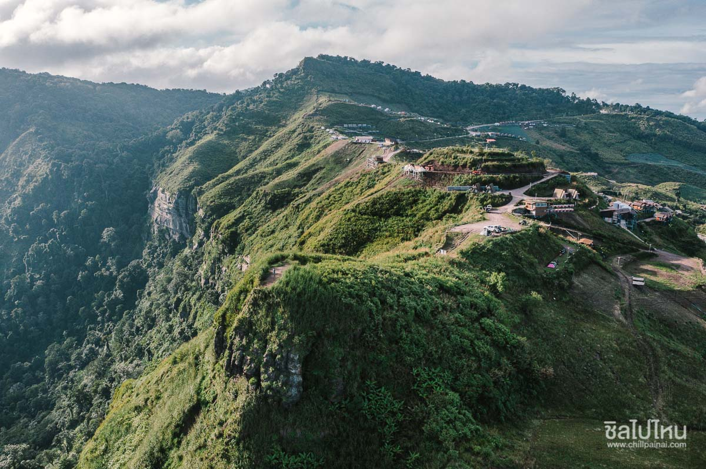

สถานที่
ผาหัวสิงห์
หน้าแรก
รายละเอียด
ประวัติส่วนตัว
ข้อมูลเพิ่มเติมเกี่ยวกับสถานที่
ประวัติ
สำหรับเส้นทางขึ้นผาหัวสิงห์เป็นถนนลูกรัง นักท่องเที่ยวต้องขับรถขึ้นไปจอดยังลานจอดที่ทางอุทยานฯ เขาค้อ กำหนด จากนั้นจึงเดินเท้าไปอีกไม่ไกลสู่จุดชมวิวไฮไลท์ที่ปลายยอดผา
อย่างไรก็ดีด้วยความมีชื่อเสียงของผาหัวสิงห์ ที่มีนักท่องเที่ยวขึ้นไปเป็นจำนวนมาก ที่ผ่านมาจึงมีคนบุกรุกขยายที่ทำกินเดิมขึ้นไปตั้งเต็นท์ที่พักและสิ่งปลูกสร้างบดบังทัศนียภาพอันงดงามของผาแห่งนี้ จนเกิดเป็นกรณีดรามาในโลกโซเชียลอย่างกว้างขวาง เมื่อช่วงต้นเดือน ก.ค. ปี 2563 ซึ่งสุดท้ายทางกรมป่าไม้ได้สั่งการรื้อถอนเต็นท์ และสิ่งปลูกสร้าง บนยอดผาหัวสิงห์ เพื่อไม่ให้บดบังทัศนียภาพ โดยเปิดให้นักท่องเที่ยวขึ้นไปเที่ยวบนนั้นแบบมีจิตสำนึก เคารพในกฎ กติกา
จุดเด่น
มีลักษณะเป็นยอดเนินเขายื่นออกไปจากแนวผา ถือเป็นจุดชมวิวที่สามารถชมวิว ชมทะเลหมอก ได้เกือบรอบทิศทาง ที่สำคัญคือสามารถมองเห็นวิวทิวทัศน์ของ
“ภูทับเบิก”
แหล่งท่องเที่ยวชื่อดังใน จ.เพชรบูรณ์ ได้อย่างสวยงามกว้างไกล ที่ผ่านมาผาหัวสิงห์ จึงได้รับความนิยมจากนักท่องเที่ยวเป็นจำนวนมาก
กิจกรรม
ไม่มี
